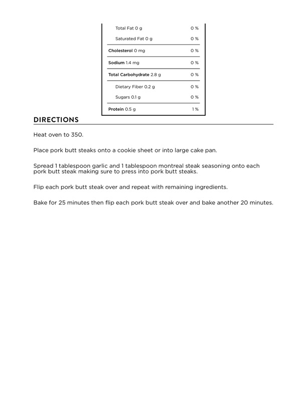

Wegman's Pork Butt Steaks (continued)

Original cookbook page 174
Continuation of the Wegman's Pork Butt Steaks recipe with cooking instructions and nutrition information
Cook: 45 minutes • Total: 55 mins
Ingredients
- 2 pork butt steaks
- 2 tablespoons garlic, minced
- 2 tablespoons McCormick's Montreal Brand steak seasoning
Instructions
- Heat oven to 350.
- Place pork butt steaks onto a cookie sheet or into large cake pan.
- Spread 1 tablespoon garlic and 1 tablespoon montreal steak seasoning onto each pork butt steak making sure to press into pork butt steaks.
- Flip each pork butt steak over and repeat with remaining ingredients.
- Bake for 25 minutes then flip each pork butt steak over and bake another 20 minutes.
Recipe #174 from collection